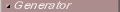
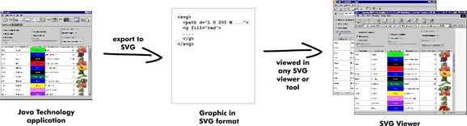
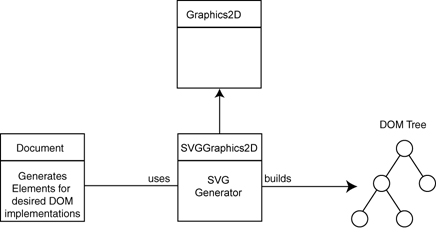

|
|

As SVG (Scalable Vector Graphics) is emerging as a promising graphics format
for a wide range of domains and applications, bridging it with Java becomes important.
This page explains how Batik's SVGGraphics2D, referred to as the SVG Generator, makes
this possible. It is divided into three parts:
|
|
On the Java platform, all rendering goes through the java.awt.Graphics2D
abstract class, which offers methods such as drawRect, fillRect, or
drawString. There are specialized
implementations of this abstract class for each type of output, such as a monitor or a printer.
SVGGraphics2D is a new implementation of that interface that generates SVG content instead of
drawing to a screen or a printer.
SVGGraphics2D provides the following:
- Allows applications to export their graphics into SVG format.
- Does not require any modification of the graphics code to export to SVG.
- Offers the user the ability to use the DOM API to manipulate the generated document.

The above figure shows how the generator works with the DOM API. The W3C has defined an API for representing
XML content with a Java programming language object. That API allows programmers to manipulate, create,
and/or modify XML content in memory. The DOM API contains interfaces such as Document,
Element, and Attr,
which model the Java programming language equivalent of XML documents, elements and attributes.
The generator manages a tree of DOM objects that represent the SVG content corresponding to the rendering
calls made on the SVGGraphics2D instance. In other words, every time a program invokes a rendering method,
such as fillRect, on a SVGGraphics2D instance, a new DOM object, representing
the SVG equivalent, is appended
to the DOM tree (for example a <rect> element will be appended after the fillRect method
has been invoked).
The programmer using this generator can then access the DOM tree to further manipulate it or can directly
write the content to an output stream, as we see in the following section.
|
|
From the figure in the previous section we can see that in order for an instance of SVGGraphics2D to build
the SVG content (the DOM tree), an instance of DOM's Document class is needed. The DOM tree is an in-memory
representation of the SVG document, which can be further manipulated by the user using DOM API or be streamed
out into any java.io.Writer.
The following excerpted code example shows how to generate SVG content from Java graphics.
 | | | |
import java.awt.Rectangle;
import java.awt.Graphics2D;
import java.awt.Color;
import java.io.Writer;
import java.io.OutputStreamWriter;
import java.io.IOException;
import org.apache.batik.svggen.SVGGraphics2D;
import org.apache.batik.dom.GenericDOMImplementation;
import org.w3c.dom.Document;
import org.w3c.dom.DOMImplementation;
public class TestSVGGen {
public void paint(Graphics2D g2d) {
g2d.setPaint(Color.red);
g2d.fill(new Rectangle(10, 10, 100, 100));
}
public static void main(String [] args) throws IOException {
// Get a DOMImplementation
DOMImplementation domImpl =
GenericDOMImplementation.getDOMImplementation();
// Create an instance of org.w3c.dom.Document
Document document = domImpl.createDocument(null, "svg", null);
// Create an instance of the SVG Generator
SVGGraphics2D svgGenerator = new SVGGraphics2D(document);
// Ask the test to render into the SVG Graphics2D implementation
TestSVGGen test = new TestSVGGen();
test.paint(svgGenerator);
// Finally, stream out SVG to the standard output using UTF-8
// character to byte encoding
boolean useCSS = true; // we want to use CSS style attribute
Writer out = new OutputStreamWriter(System.out, "UTF-8");
svgGenerator.stream(out, useCSS);
}
} | | | | |
We can see that generating SVG content from our TestSVGGen instance is a three step
process:
1. Create an instance of org.w3c.dom.Document that the generator will use to build its XML content;
create an SVG generator using the Document instance.
| | | |
// Get a DOMImplementation
DOMImplementation domImpl =
GenericDOMImplementation.getDOMImplementation();
// Create an instance of org.w3c.dom.Document
Document document = domImpl.createDocument(null, "svg", null);
// Create an instance of the SVG Generator
SVGGraphics2D svgGenerator = new SVGGraphics2D(document);
| | | | |
2. Invoke the rendering code on our SVG generator. In our example, we invoke TestSVGGen's
paint method:
| | | |
// Ask the test to render into the SVG Graphics2D implementation
TestSVGGen test = new TestSVGGen();
test.paint(svgGenerator);
| | | | |
3. Stream out the SVG content. The SVG generator can stream its content into any java.io.Writer. In our
example, we stream the content to the standard output stream:
| | | |
// Finally, stream out SVG to the standard output using UTF-8
// character to byte encoding
boolean useCSS = true; // we want to use CSS style attribute
Writer out = new OutputStreamWriter(System.out, "UTF-8");
svgGenerator.stream(out, useCSS);
| | | | |
SVG has two ways of expressing properties, such as the fill color: either XML attributes or CSS inline properties.
The 'useCss' parameter allows the user to control that option.
|
 | |  | | SVG Generator Customization | |  | |  |
|
In the previous section, we have just seen that the SVG generation process can be customized to output SVG style as XML attributes or CSS inline properties. In this section we will talk about some examples of more advanced customizations.
Instead of creating the SVGGraphics2D just by using the Document that will be used as a factory for creating the SVG elements, we can use the constructor that use an SVGGeneratorContext instance. By providing your own SVGGeneratorContext instance, you will be able to do advanced customization. You will find below several examples of possible customizations.
| | | | Have your own comment in the generated SVG file | | | | |
| | | | Use Embedded SVG Fonts in the generated SVG file | | | | |
| | | | Customizing the way images are stored | | | | |
|
Every time you call one of the drawImage methods provided by the Graphics2D class,
a default representation of your image is created in a location and put in a default file. For instance, a base64
encoding is created and embedded in the SVG file by default. Alternatively, you
can choose to have your images written to separate files in a predefined directory, in one of the two raster
formats required by the SVG specification, JPEG, PNG or Tiff.
You can change the default behavior by explicitly providing the image handler to be used by the SVG generator.
Once again, you use the SVGGeneratorContext for this. In the example below, all images are converted to PNG
format and written to directory "res/images".
| | | |
SVGGeneratorContext ctx = SVGGeneratorContext.createDefault(myFactory);
ImageHandler ihandler = new ImageHandlerPNGEncoder("res/images", null);
ctx.setImageHandler(ihandler);
SVGGraphics2D g2d = new SVGGraphics2D(ctx, false);
| | | | |
Using the default image handlers results in a new copy of the image data being written to the SVG file or an
external file, for every single drawImage call. If you use the same images over and over again,
then this may result in an SVG file containing a lot of redundant data. At the price of a slight performance
penalty during initial generation of the SVG DOM tree, you can choose to have your image data reused. For this
you use a specialized image handler, as shown below.
| | | |
SVGGeneratorContext ctx = SVGGeneratorContext.createDefault(myFactory);
// Reuse our embedded base64-encoded image data
GenericImageHandler ihandler = new CachedImageHandlerBase64Encoder();
ctx.setGenericImageHandler(ihandler);
SVGGraphics2D g2d = new SVGGraphics2D(ctx, false);
| | | | |
With the caching image handlers, it is even possible to reuse the same copy of your image data across
several different SVG documents. Just keep a reference to the image handler, and pass it to the
SVGGraphics2D instance used for generating the SVG DOM tree. The following
simplified example shows how different SVG trees might be created by separate SVG generators,
efficiently storing any common images just once.
| | | |
class MySVGGenerator {
// the image handler will write all images files to "res/images"
private static ImageHandler ihandler =
new CachedImageHandlerPNGEncoder("res/images", null);
public void generateSVG(JPanel myCanvas, OutputStream outStream) {
DOMImplementation domImpl =
GenericDOMImplementation.getDOMImplementation();
Document myFactory = domImpl.createDocument(null, "svg", null);
SVGGeneratorContext ctx =
SVGGeneratorContext.createDefault(myFactory);
ctx.setGenericImageHandler(ihandler);
SVGGraphics2D svgGenerator =
new SVGGraphics2D(ctx, false);
// create the SVG DOM tree
myCanvas.paintComponent(svgGenerator);
Writer out = new OutputStreamWriter(outStream, "UTF-8");
svgGenerator.stream(out, true);
}
} | | | | |
|
| | | | Customizing the generated SVG style | | | | |
| | | | Extending Paint object to SVG element translation | | | | |
|
The SVGGraphics2D is able to generate SVG elements for generic Java 2D objects, but you sometimes have your own classes such as implementations of the Java 2D java.awt.Paint interface. In this case, you will need to write an ExtensionHandler that you will set on your SVGGeneratorContext.
In the following example we define the first draft of an ExtensionHandler allowing to translate a Batik implementation of the java.awt.Paint interface named org.apache.batik.ext.awt.LinearGradientPaint.
| | | |
class SubExtensionHandler extends DefaultExtensionHandler
{
public SVGPaintDescriptor handlePaint(Paint paint,
SVGGeneratorContext generatorCtx)
{
if (paint instanceof LinearGradientPaint) {
LinearGradientPaint gradient = (LinearGradientPaint)paint;
String id = generatorCtx.getIDGenerator().generateID("gradient");
Element grad = generatorCtx.getDOMFactory().
createElementNS(SVGSyntax.SVG_NAMESPACE_URI,
SVGSyntax.SVG_LINEAR_GRADIENT_TAG);
grad.setAttributeNS(null, SVGSyntax.SVG_ID_ATTRIBUTE, ref);
grad.setAttributeNS(null,
SVGSyntax.SVG_GRADIENT_UNITS_ATTRIBUTE,
SVGSyntax.SVG_USER_SPACE_ON_USE_VALUE);
Point2D pt = gradient.getStartPoint();
grad.setAttributeNS(null, "x1", pt.getX());
grad.setAttributeNS(null, "y1", pt.getY());
pt = gradient.getEndPoint();
grad.setAttributeNS(null, "x2", pt.getX());
grad.setAttributeNS(null, "y2", pt.getY());
switch (gradient.getCycleMethod()) {
case MultipleGradientPaint.REFLECT:
grad.setAttributeNS(null,
SVGSyntax.SVG_SPREAD_METHOD_ATTRIBUTE,
SVGSyntax.SVG_REFLECT_VALUE);
break;
case MultipleGradientPaint.REPEAT:
grad.setAttributeNS(null,
SVGSyntax.SVG_SPREAD_METHOD_ATTRIBUTE,
SVGSyntax.SVG_REPEAT_VALUE);
break;
// pad is the default...
}
// here we should write the transform of the gradient
// in the transform attribute.
// here we should write the stops of the gradients as
// children elements.
return new SVGPaintDescriptor("url(#"+ref+")",
SVGSyntax.SVG_OPAQUE_VALUE, grad);
} else
return null; // let the default mechanism do its job
}
}
| | | | |
You should then set it on the SVGGeneratorContext by using the setExtensionHandler method.
| | | |
SVGGeneratorContext ctx = SVGGeneratorContext.createDefault(myFactory);
ctx.setExtensionHandler(new SubExtensionHandler());
SVGGraphics2D g2d = new SVGGraphics2D(ctx, false); | | | | |
|
|
| | | | How to view the generated SVG document | | | | |
|
|